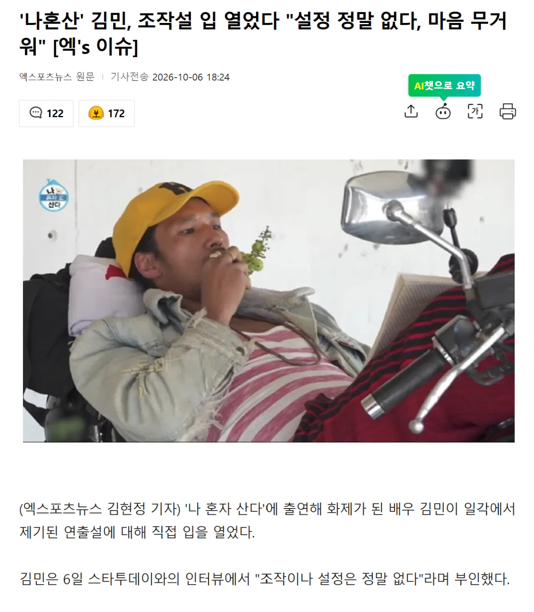

김민은 "보시는 분들이 여러 가지 호기심을 가질 수 있고 그만큼 또 열혈 시청해주신 것 같아 감사한 마음도 크다. 제작진 역시 민감한 시기에 저와 새롭게 인연을 맺고 열심히 함께해줬는데 예상치 못한 여러 이야기들이 나와 한편으로 마음이 무겁기도 하다. 형과 누나에게도 괜스레 미안한 마음"이라며 연출설이 제기된 것에 대해 안타까워했다.
그는 "이곳은 내게 정말로, 정말로 남다른 공간이다. 가족 같은 형과 누나, 그들의 소중한 추억이 그대로 담긴 곳이다. 그분들이 태어나고 형의 아버지가 직접 지은 공간이다. 깊은 인연으로 내가 머물게 되면서 최대한 그 추억을 보전하면서도 내가 머무는 동안 고치고 손볼 수 있는 것들을 차근차근 해나가며 시간을 보내고 있다. 앞으로도 그럴 것"이라고 전했다.
그러면서 "긴 말을 더 할 필요는 없을 것 같다. 내 소중한 사람들, 공간을 좀 더 따뜻한 시선으로 바라봐주시면 감사하겠다"라고 당부했다
에헤이 그거 말하면 법적으로 문제될 소지가 있으니 아니라고 직접 말한쪽을 믿어야지 이사람아